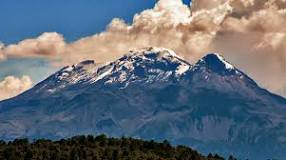

¡Bienvenido a la página 1! En esta página, te llevamos a una emocionante aventura en la montaña. Siente la adrenalina mientras escalas alturas impresionantes, respira aire puro y disfruta de vistas panorámicas que te dejarán sin aliento.
1. Pico de Orizaba (Citlatépetl) en Veracruz, zona de Altas Montañas
Ubicado en la parte central del estado de Veracruz y rodeada de una zona boscosa, el Pico de Orizaba se posiciona como una de las montañas en México más alta, superando los 5.700 metros sobre el nivel del mar. Se trata de un volcán que se encuentra cubierto fundamentalmente de nieve, y en el que podrás realizar diversas actividades, desde las más relajantes a las más eufóricas y aventurera.

2. Parque Nacional Popocatépetl-Iztaccíhuatl entre el Estado de México, Puebla y Morelos
El Parque Nacional Popocatépetl-Iztaccíhuatl es un área de gran biodiversidad que ha sido declarada por la UNESCO como una reserva de biosfera. En esta zona se encuentran dos de las montañas más altas de México que son precisamente los que dan nombre al parque.
3. Huasteca Potosina en San Luis Potosí
Otra de las montañas en México de mayor relevancia es la Huasteca Potosina; que se encuentra en el hermoso estado mexicano de San Luis Potosí. Posee una extensa área donde se pueden apreciar hermosos paisajes.